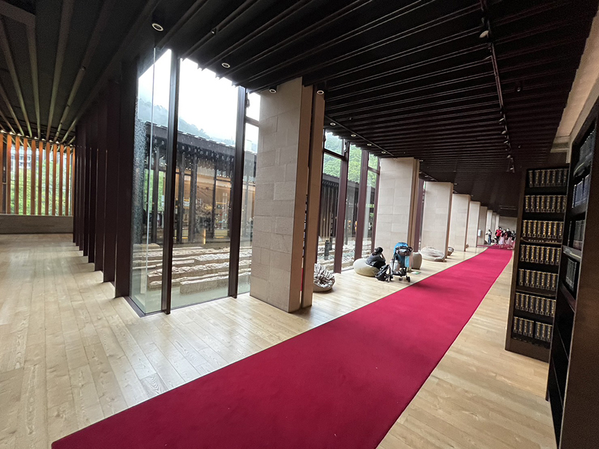

|  |
記得今年春節過年前，友人一直推薦給我這本書，說看完後一定會獲益良多，會有很多的感想心得，看著書名我微微蹙眉以為這是一本關於清潔打掃的工作書，還想著是朋友在暗示我過年快到囉！是不是應該好好地面對家中沉積的雜亂了，所以一開始對它感到興致缺缺，並將它束之高閣眼不見為淨，直到9天的年節來到尾聲時，突然撇見了這本書，想著閒著也是閒著，不妨當打發時間看一下吧！結果就是一頁接著一頁欲罷不能地一口氣把整本書閱讀完了。
看完後，心境果然產生截然不同的變化，之前混沌焦慮的心情也得到整頓後的平靜，書中的主軸內容提到房子＝大腦，一個家中囤積大量無用之物的人，大腦往往也常呈現混亂、思緒繁雜，不管是值得運用的知識，抑或是無用的雜訊全都往腦中堆積填塞讓大腦堵塞了，使得人也渾渾噩噩反應變得遲鈍，進而影響工作表現，如果家中乾淨整潔的人，腦袋也同時會經常做重整去蕪存菁，思緒變得敏捷清晰。
但知易行難，每當想要大刀闊斧好好整頓家中環境時，看到家裡琳瑯滿目的物品，散落各地的衣物時，心中的熊熊戰火立刻被澆熄了一半，還沒行動就開始覺得累了．．．．．．也變得無法長久的打掃，很快就半途而廢了，書中強調每天打掃10秒鐘，潛移默化慢慢養成習慣將清潔的行動力深植心中，不管對裡對外都能隨時進行清掃，可能有人會想：┌10秒鐘是能做什麼事？我把吸塵器拿出來可能都不只10秒鐘了！┘，其實大家把打掃想得太過實體化，不一定是掃地，拖地，倒垃圾才叫做打掃，早晨醒來順手開窗讓空氣流通，也是一種整潔，空氣流通了，腦袋也會跟著清醒過來，這就是一種無形的打掃，抑或是桌上一張過期的發票順手丟掉，想著每天減少一公克讓家裡變得更清爽這樣想著是不是更容易執行下去，很難有拒絕整潔的理由，隨著這些舉動，無意識的心與腦也會跟著把不必要的東西拋出腦外，每天10秒鐘慢慢的可以變成隨時10秒鐘，慢慢地讓10秒鐘延續下去。
一開始提到房子＝大腦，其實每一個我們生活的區塊都代表著腦中不同的功能，辦公桌代表著工作腦、皮夾代表著財運腦、廚房代表著健康腦、客廳代表著家庭腦……等等，試想一個辦公桌堆滿雜物，甚至連已經結案N年的企畫書還堆放在桌上的人，是否讓人覺得他工作效率不高，無法快速地進入工作狀態，往往需要時間尋找遺失在辦公桌的報表資料，而辦公桌整潔的人，做起事來大多有條不紊，令人安心委辦事項，而想要辦公桌整潔其實不難，隨時10秒鐘，將物品歸位，超過使用效期的資料順手歸檔不拖延，慢慢的乾淨清爽的桌面就會呈現你眼前，相信你的工作腦也會運行順暢，減少不必要的時間浪費。經常聽長輩說財運看皮夾，說得一點也沒錯，如果一個人的皮夾裡塞滿了各式各樣的信用卡、會員卡、折價卷，常常會使人產生額外支出，例如為了滿額折扣而多買不必要的商品，又或是信用卡太多，不曉得哪張信用卡未繳費造成利息等，皮夾裡最好只放1～2張的信用卡，會員卡、折價卷，沒必要不就要放，如此可以省下很多開銷。若廚房如果充滿油煙污漬，擺滿了各式各樣的加工食品，人怎麼可以吃得健康並且擁有一副健康的身體呢？多花10秒想一下，減少購買加工食品也是一種對自我健康的打掃。客廳乾淨整潔，家人就會願意多花時間在客廳活動，親人間無形就多了許多相處的時間，聯絡彼此的近況，增進大家的情感。
整潔的好處不僅僅是外在的視覺感官，更多的是無形的情感、運氣的開闊，別忘了每件垃圾都有付房租，它們每在我們身邊一天，我們都在付出金錢或健康，清出它們，能讓我們的生活空間獲得更好的規劃，讓我們的身體取得更好的健康本錢。┌早上10秒的打掃習慣，人生就此改變┘讓我學習到了如何打掃，也學會了如何為腦袋做清潔，希望可以分享給各位。